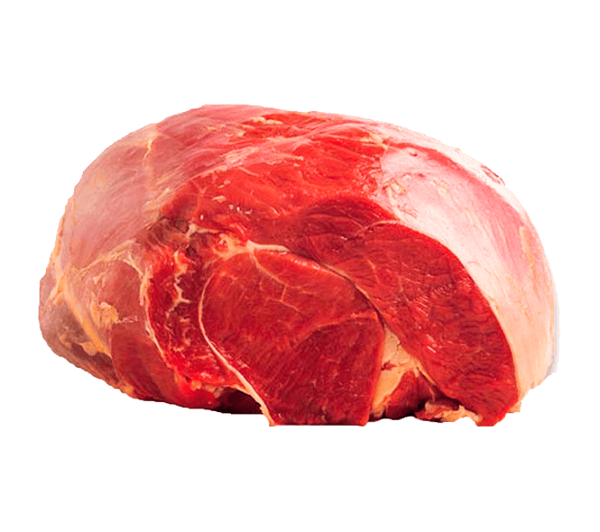
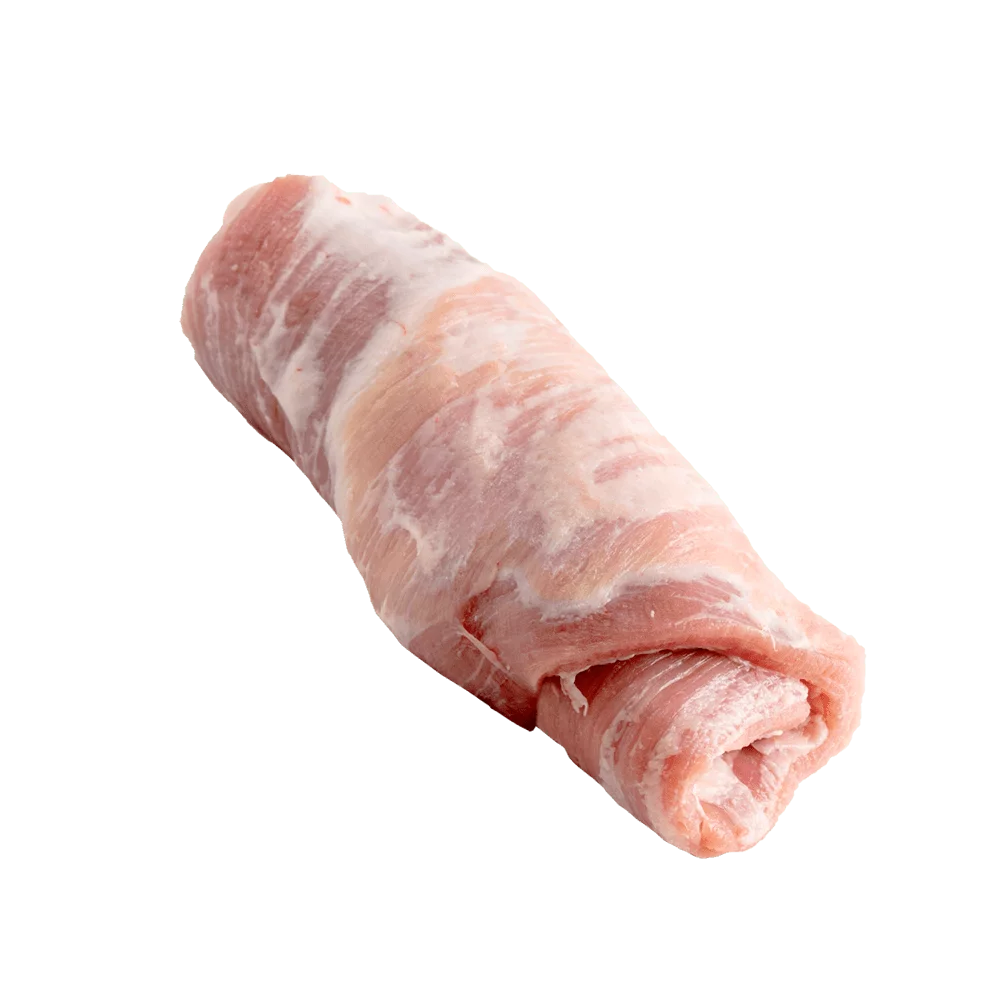
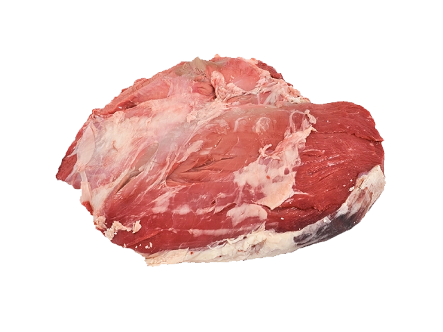
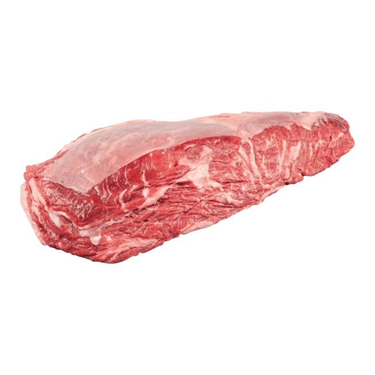

¿Donde encontrarnos?
Descubre nuestra carnicería en Gregorio de Laferrere, a escasas cuadras de la estación de tren. Ofrecemos cortes de carne fresca de primera calidad. Nuestro amable personal está listo para servirte. ¡Visítanos para una experiencia culinaria excepcional!
¿Quienes somos?
Somos una carnicería de barrio comprometida con la calidad. Nuestros cortes frescos y el servicio amable son nuestra tradición. ¡Te invitamos a disfrutar de la mejor carne en cada bocado!

El corte de "bola de lomo" es perfecto para preparaciones que requieren ternura, como filetes a la parrilla, medallones, estofados y otros platos donde se busca destacar la calidad de la carne. Su sabor delicado y su textura suave hacen que sea una elección muy apreciada en la alta cocina. Puede ser utilizado en una variedad de recetas gourmet para deleitar a los amantes de la carne más exigentes.

El "matambre" es un corte de carne que se encuentra en la zona ventral del animal, entre la piel y las costillas. Es un corte fino y generalmente es magro, con una capa de grasa en un lado que le aporta sabor y jugosidad.

La "nalga sin tapa" es un corte de carne de res que se obtiene de la parte trasera de la res. Es una carne magra y tierna, ideal para cortar en bisteques, filetes para su clasica formula las Milanesas.

El "vacio" es un corte de carne de res que proviene de la parte abdominal de la res. Es conocido por su equilibrio entre magro y grasa, lo que le proporciona un sabor y una textura excepcionales. El vacío es un corte popular en la cocina sudamericana, especialmente en Argentina, donde se asa a la parrilla con frecuencia.